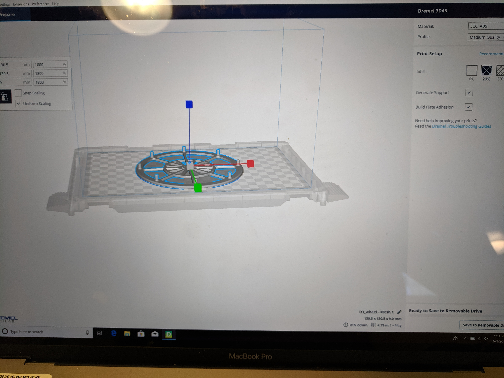
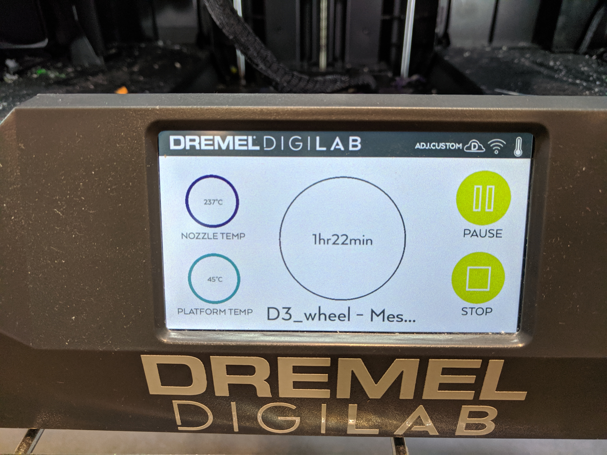
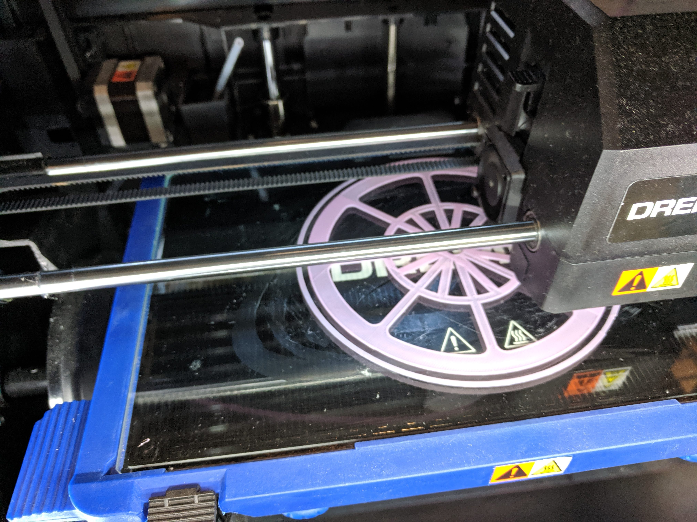
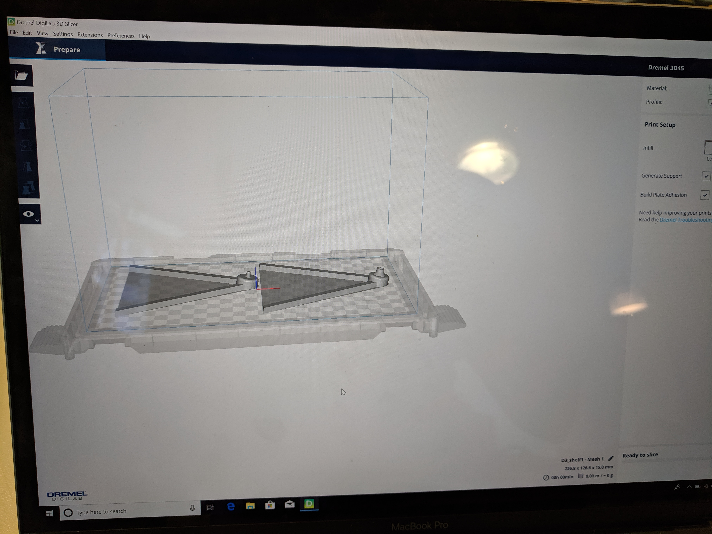
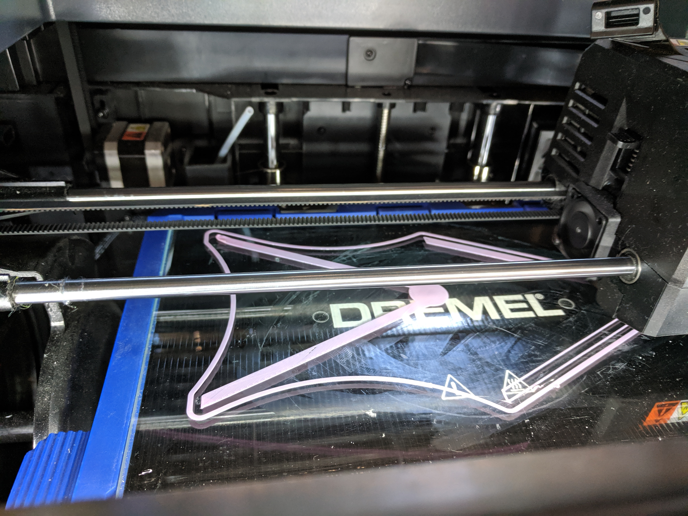
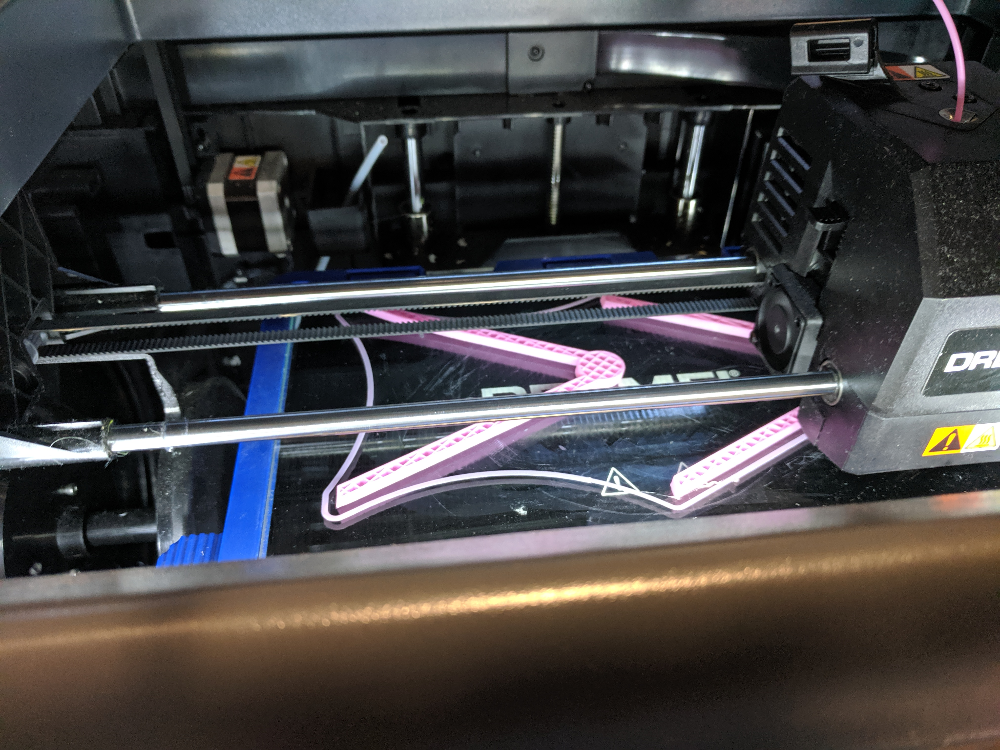
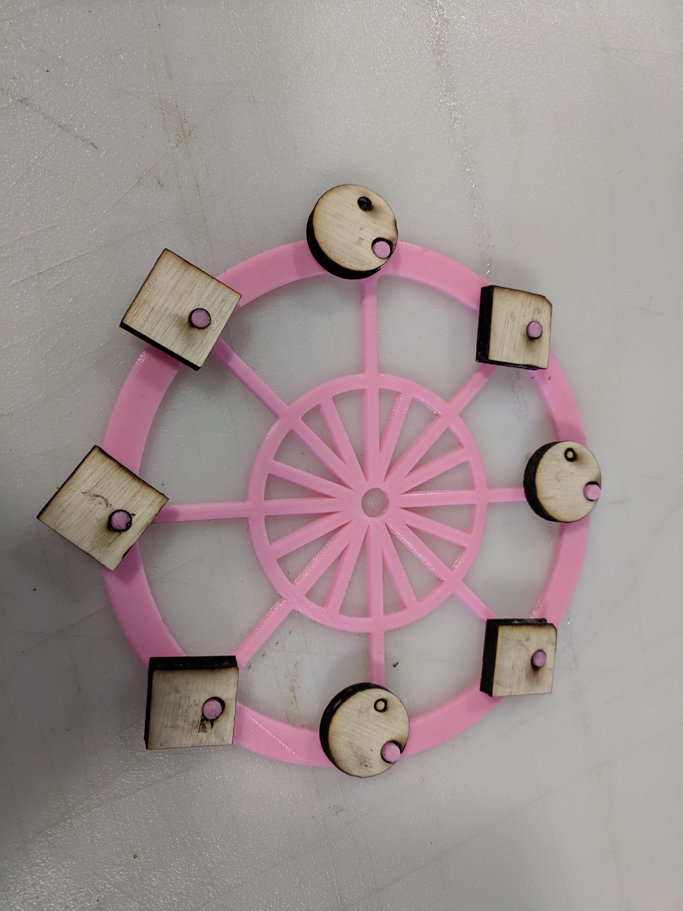

Final Project: Ferris Wheel
Presentation

For the final project, I made a Ferris Wheel.
Source Files
Part 1: Wheel
Part 2: Stand
Part 3: Hanging parts
Part 4: Base mold
Design Inspiration Source
I got the design inspiration & original STL files from Thingiverse. Yayy for Commons Attribution!
Ferris Wheel Photo Frame via Thingiverse
Project Steps
Step 1: Wheel
I modified the STL file for the wheel & prepared the file before 3D printing it.

The wheel took nearly 2 hours to print, even though Dremel machine estimated it would take 1 hour 22 mins.



Step 2: Stand
Like the wheel, I modified the STL file for the stand & prepared the file before 3D printing it.

The stand took about an hour to 3D print.


3D Printer Settings
I used the same 3D printer settings for both the wheel & stand.

Step 3: Hanging parts
My original plan was to create molds, but I was concerned about the weight of plaster molds since it would topple the 3D printed wheel & stand, so I decided to laser cut the hanging parts.
As mentioned in my presentation video, I used wood available at the Mill and noticed that it was catching fire very easily.
One of the Mill student assistants suggested changing the printer settings, since the quality of wood was poor.

I don't have a picture of the individual laser cut pieces because I was focused on making sure the wood & machine didn't catch fire!

Step 4: Base mold
My original plan did not include this, but I decided to include it so the wheel & base were more stable.
Instead of creating a new mold & cast, I decided to reuse the triangle mold from my previous assignment - Assignment 6.
This worked out well since I already had some left-over plaster from my previous project.
Bill of Materials
Acrylic sheet to laser cut: 12x12 inches: $12
Filament to 3D: $18
To be purchased from the Mill or Amazon.
3mm cardboard: 12x12 inches: $25
To be purchased from Home Depot.
OOMO Silicone: $26
Purchased for previous project, I have left over silicone to create the mold.
Plaster: $5
Purchased for previous project, I have left over plaster to create the photo frame replicates.
Total Cost: $86
Final Output
To be updated
Issues encountered & lessons learnt
To be updated.
Peer Attributions
To be updated